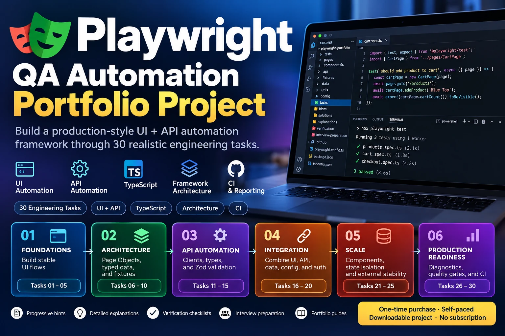
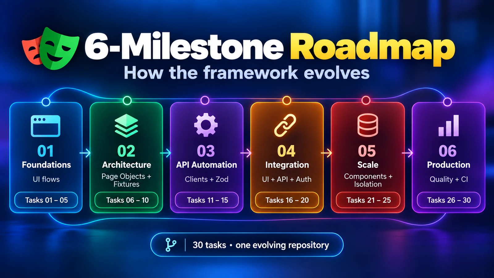
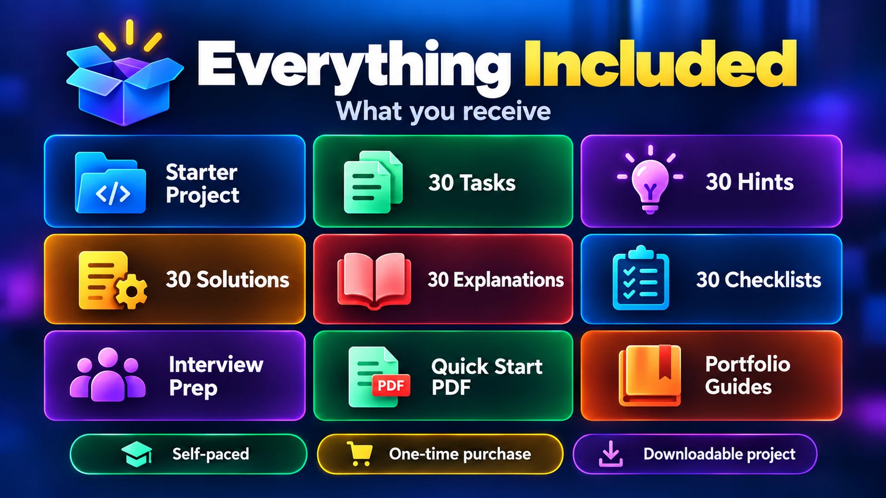
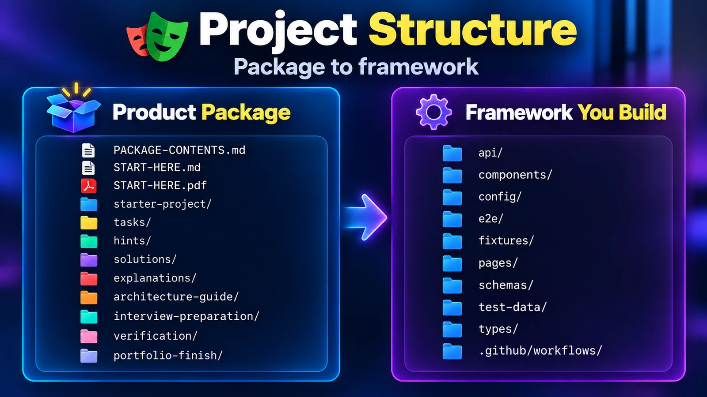
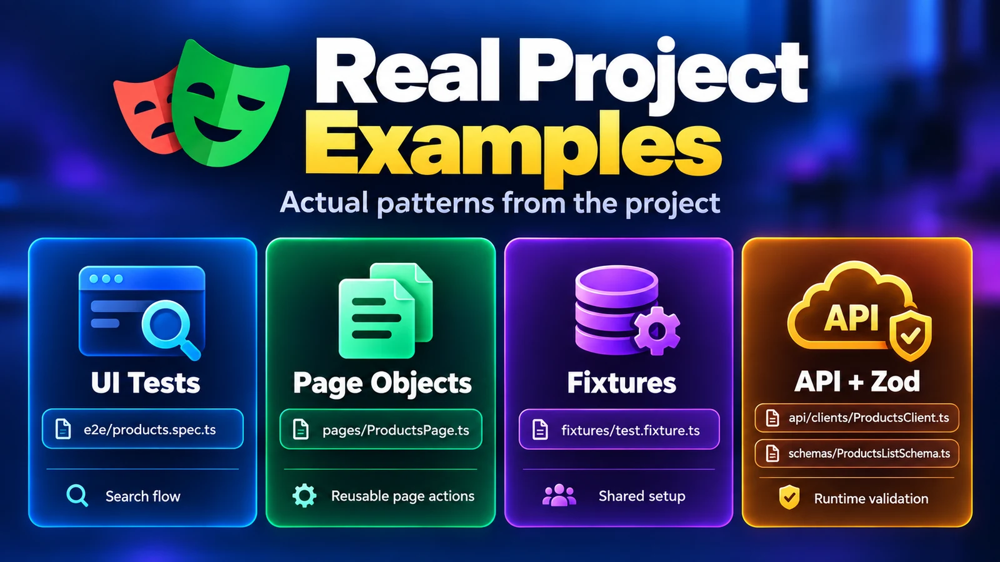
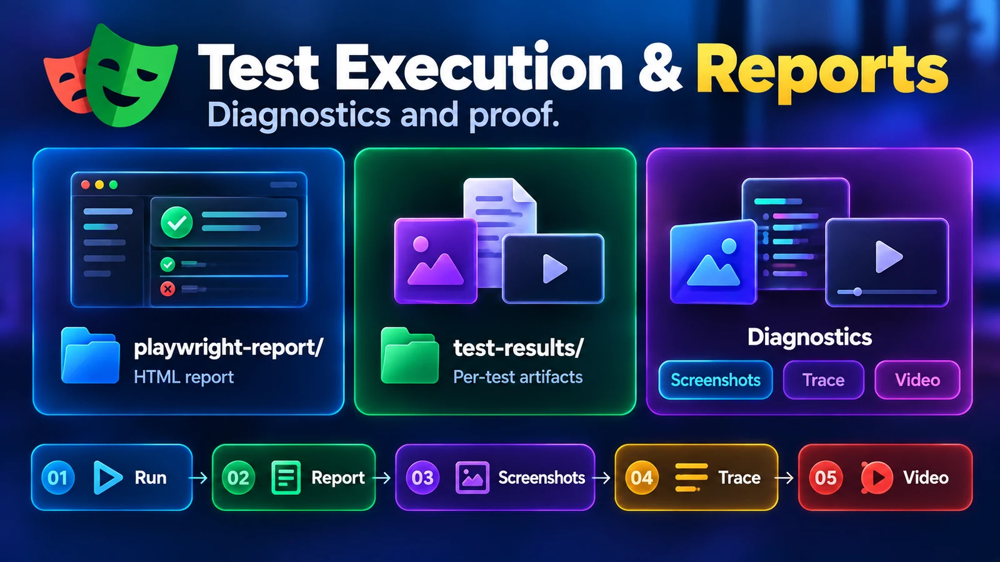
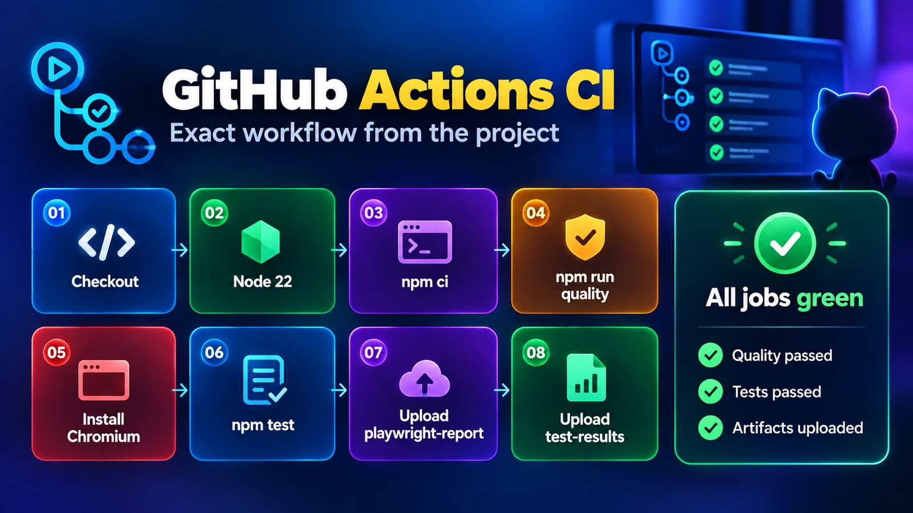
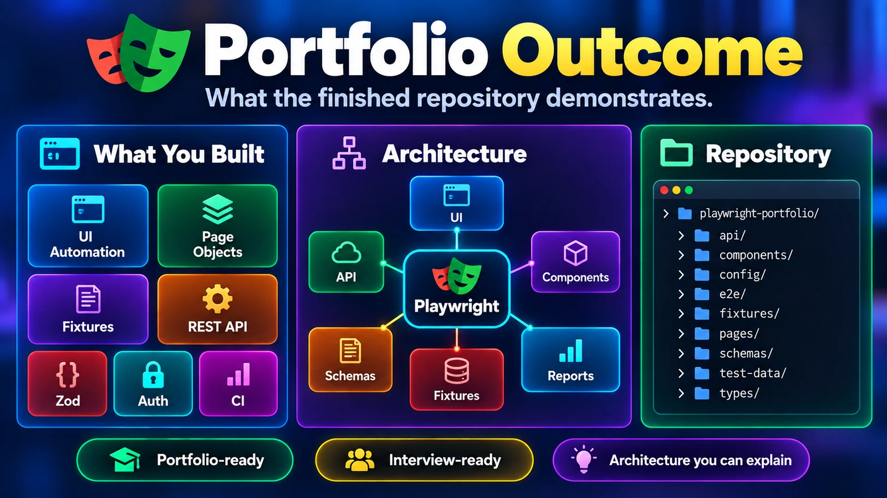
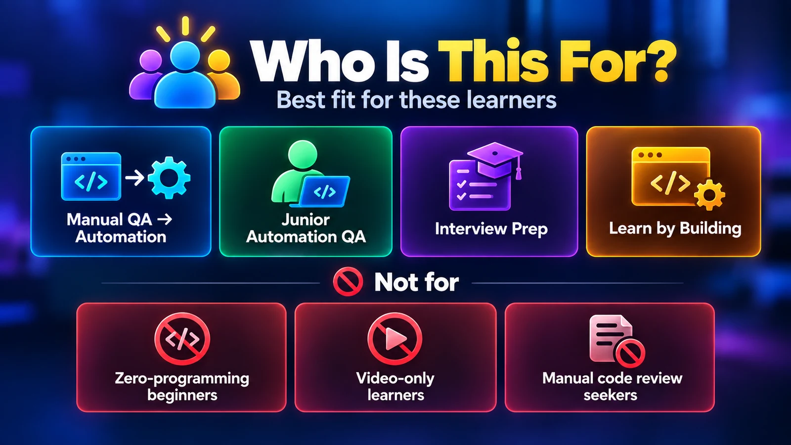

Build
One evolving repository, not disconnected exercises.
Guided QA Automation Engineering Project
Build a production-style UI + API automation framework through 30 realistic engineering tasks.
Self-paced · One-time purchase · Downloadable project · No subscription

One evolving Playwright repository.
Why this project
One evolving repository, not disconnected exercises.
Hints, reference solutions, explanations, and verification.
Finish with portfolio material and interview talking points.
30 tasks · 6 milestones
Architecture appears when the project actually needs it.

Everything included
Start from an intentionally incomplete project. Attempt the task first, then use hints and reference material only when needed.

Real engineering work
Framework structure, real project patterns, diagnostics, and CI are part of the work—not bonus theory.




Portfolio outcome
The end result is a GitHub-ready framework with UI + API automation, reusable architecture, runtime validation, authentication, diagnostics, quality gates, and CI.

Who it is for

Contact
For product, purchase, download, or support questions, email:
One-time digital product
30 engineering tasks · UI + API · TypeScript · Architecture · CI